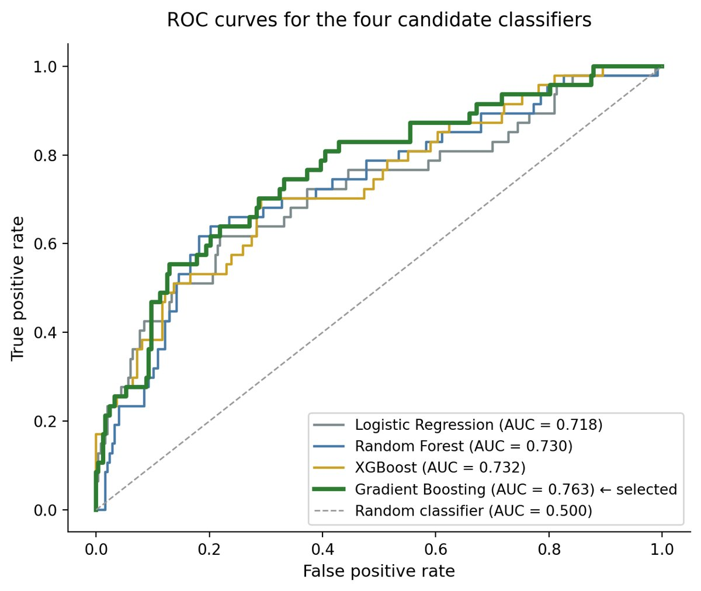
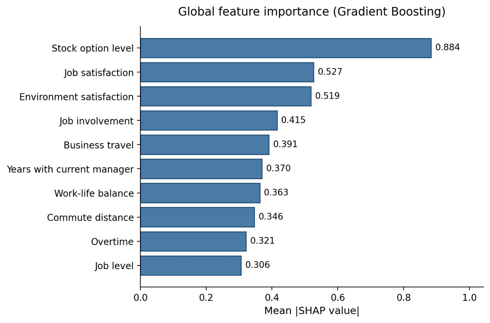
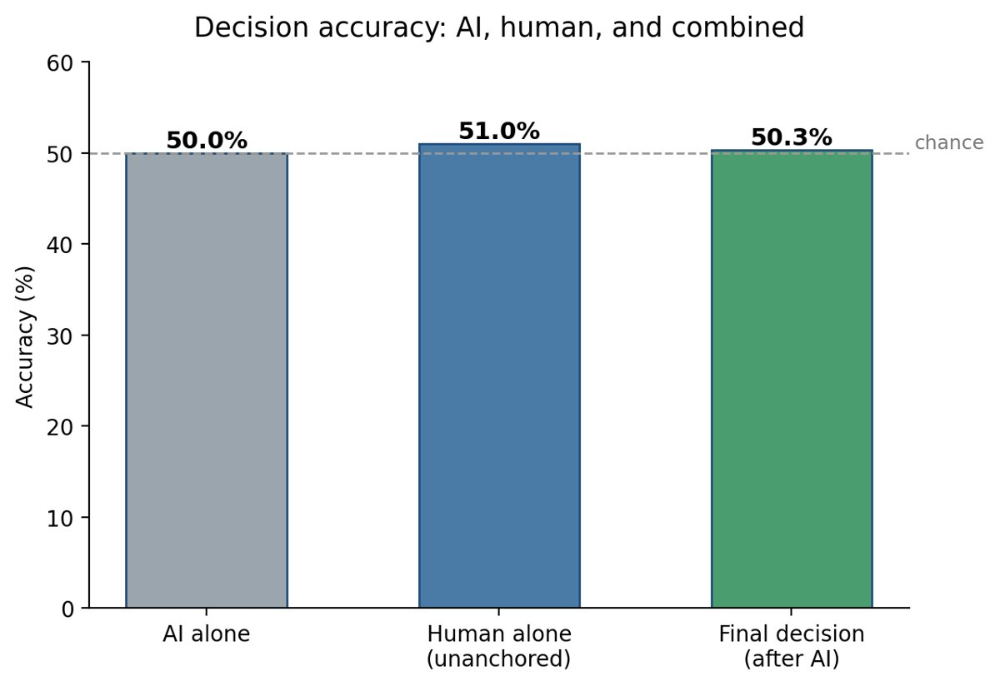
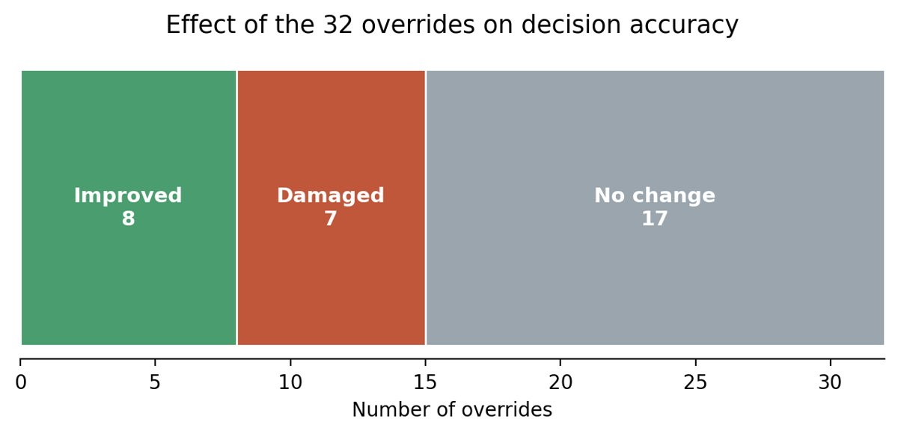
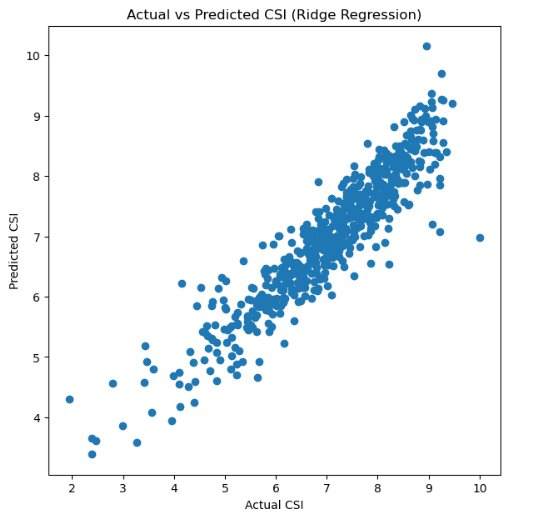
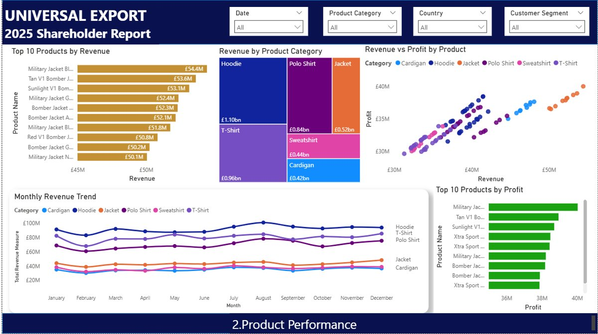
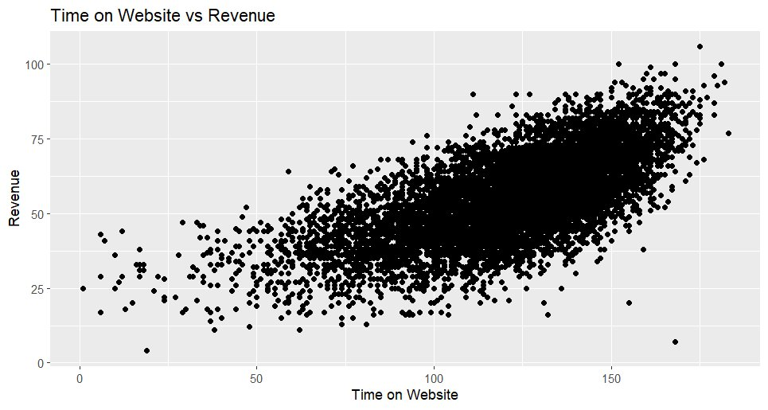
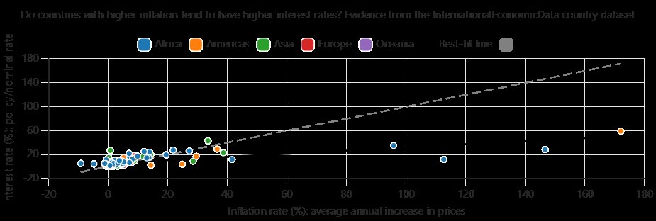
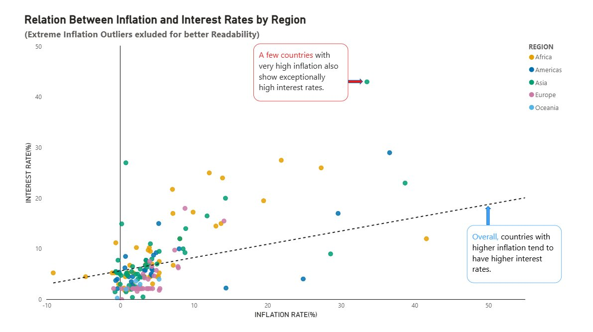

I find what the data is saying and turn it into decisions people trust.
I'm Shwetha, a data and business analyst in Leeds. I build pipelines, dashboards, models and AI automations, and I bring an MBA in HR and finance to the questions behind them.
Leeds, UKMSc Business Analytics & Decision Sciences
Python · SQL · Power BIExcel · R · DAX
Open to analyst roles
5,400+Slack messages turned into attendance data automatically
50–60%less manual reporting from my automation
10+organisations advised on how they run
38HR professionals in my AI decision-making study
Selected work
What I'm building and advising on right now.
R
RisidioData Analyst · Apr 2026 – present
Slack attendance automation Live
Staff logged attendance as free-text Slack messages, so someone tracked hours by hand. I built a Slack bot and Python pipeline that reads every message, copes with the messy ways people write, and turns them into clean working-hours data every day. I also saved a year of workspace history before access ran out.
Team member9:41 AM
attended from 9.30am till 5:15 pm
↓ parsed into
Date
Start
End
Hours
14 Oct
09:30
17:15
7.75
Illustrative example
5,400+messages parsed
99%+parsing accuracy
1 yearof history saved
Connect
Parse
Store
Automate
Python
Slack API
pandas
Task Scheduler
Excel
R
RisidioData Analyst · Apr 2026 – present
People Intelligence System In progress
Workforce data lived in separate files: HR records, attendance, hiring, onboarding, feedback, exits and skills. I gathered the requirements and designed one platform that links them as seven modules, with KPIs like attendance consistency, skill coverage and hiring conversion, plus rule-based alerts such as skill gaps.
Where it stands
Data collection
Data validation
KPIs
Dashboards
AI alerts
Launch
DoneNowNext
7data modules
8workforce KPIs
6dashboard pages planned
Requirements
Model
Measure
Recommend
Data modelling
Requirements
Power BI
KPI design
B
Blackmount ConsultingBusiness Consultant · Mar 2026 – present
Process and growth advisory
I map how client businesses actually run, find where time and money leak out, and turn that into recommendations people can act on. I run requirements gathering, process documentation and stakeholder updates across several client projects at once.
Map
Diagnose
Recommend
Report
Process mapping
Gap analysis
Requirements
Stakeholder management
10+organisations analysed
15+reports and decks delivered
Also at Risidio: I contribute to the team's AI knowledge platform, with sourced search answers and role-based access across 100+ internal documents, and I'm planning its Slack integration.
Research · MSc dissertation, University of Leeds
Do HR professionals catch an AI's mistakes?
Companies use AI to predict which employees will leave, and add explanations so people can check the prediction instead of accepting it blindly. I tested whether that actually works.
Stage 1
Built the model.Trained four classifiers on 1,470 employee records, balanced the 16% leavers with SMOTE, and picked Gradient Boosting (AUC 0.763, 82% accuracy). Generated SHAP explanations for every prediction.
Stage 2
Ran an experiment.38 HR and people analytics professionals made 304 decisions. Each gave their own view first, then saw the AI's prediction, with an explanation on half the cases.
What I found
People changed the AI's call in almost half of decisions, but not more often when it was wrong. Prior disagreement drove it (odds ×2.1, p = .006).
Explanations raised acceptance from 48% to 57% without helping anyone spot a wrong prediction.
Humans and the model made the same mistakes (r = 0.43), so overrides left accuracy unchanged.
So what: explanations build trust without improving oversight. HR tools should show how reliable the model is for each case.

Model choice. Gradient Boosting beat Logistic Regression, Random Forest and XGBoost on ROC-AUC (0.763).

What drives attrition risk. SHAP shows stock options, job satisfaction and work environment matter most.

Accuracy didn't move. Cases were chosen so the AI was right exactly half the time, by design, to test whether people could spot its errors. On the full test set the model scored 82%.

Overrides cancelled out. Of 32 overrides, 8 helped and 7 hurt (McNemar p = 1.00).
Model
Explain
Experiment
Analyse
Python
scikit-learn
XGBoost
SHAP
SMOTE
statsmodels (GEE)
Experiment design
Qualtrics
Analytics projects
Dashboards, models and the decisions behind them.
Each one starts with a business question and ends with something a manager could act on.
Operations dashboard · Power BI
Hospital emergency room dashboard
ER managers need to see patient volume, waiting times and satisfaction at a glance so they can plan staff.
I built a four-page Power BI dashboard over 9,216 visits from April 2023 to October 2024: a monthly view with year and month slicers, a consolidated trend view, a patient drill-down and a page of written takeaways, all driven by DAX measures and a date table.
What it showedSatisfaction sits near 5/10 whether patients wait 15 minutes or close to an hour, so cutting waits alone won't lift it. Only 41% are seen within 30 minutes, and demand is steady all week, so staffing has to be too.
Monthly view. Year and month slicers drill into any month, shown here for February 2024. Click to open full size.
Machine learning + generative AI
AI hotel risk monitor
Booking platforms can't read thousands of reviews to spot hotels that are about to disappoint guests.
Combined data on 2,983 hotels with their review text (3,000 TF-IDF features) to predict a satisfaction score, flagged the bottom 10%, then had Llama 3.3 write a risk profile from a flagged hotel's reviews using a structured JSON prompt.

Actual vs predicted satisfaction for 597 test hotels. Ridge R² 0.843, against 0.678 for Random Forest and 0.350 for Linear Regression.
ResultRidge explained 84% of the variation in satisfaction. The AI profile surfaced staff shortages, outdated rooms and pricing concerns, with refurbishment and a pricing review as next steps.
Predict
Flag
Summarise
Recommend
Python
scikit-learn
TF-IDF
Groq API
Llama 3.3
Shareholder reporting · Power BI
Universal Export 2025 report
A Southampton garment maker needed a year-end performance story that non-technical shareholders could follow.
Cleaned four sources in Power Query, built a star schema with a DAX date table and measures, and designed five pages that move from overview to products, markets, profitability and risk, then recommendations.

Product Performance, one of five report pages.
35,000orders
22countries
109products
ResultHoodies and T-shirts lead, and the UK, Spain, France, Germany and Ireland carry most revenue. The report flags concentration risk in a few markets and customers.
Power BI
Power Query
DAX
Star schema
Regression · e-commerce
What drives online order value
A fragrance retailer wanted to know which customer behaviours drive spend, and to predict revenue for new customers.
Explored 10,000 orders, diagnosed the missing data and chose multiple imputation (MICE) over simple fills, then fitted a linear regression and checked its assumptions, including a Durbin–Watson test.

Time on site was the clearest driver: each extra unit added about £0.36 to the order.
ResultPredicts order value to within about £10 on a £55 average and explains 44% of the variation. Vouchers and ad channel made no difference. I scored 20 new customers (£17–£67) for a tiered targeting plan.
R
ggplot2
mice
VIM
lmtest
Decision science · Excel
Choosing a delivery robot for Leeds
A delivery firm had to pick one of seven robot prototypes for a last-mile trial, judged on capacity, battery, speed, mobility, looks, cost and reliability.
Turned management priorities into weights with the Analytic Hierarchy Process, ranked the robots with a Weighted Sum Model, then shifted the weights by ±5, 10 and 15% towards battery, cost and reliability.
Weighted Sum Model score
Gamma0.159
Bravo0.152
Delta0.146
Echo0.142
Charlie0.137
Foxtrot0.136
Alpha0.128
00.0850.17
ResultGamma ranked first in every scenario, so the recommendation holds even if priorities change.
Excel
AHP
MCDA
Sensitivity analysis
Data storytelling · Power BI
Fixing an AI-made chart
Microsoft Copilot produced a cluttered chart of inflation against interest rates for economics students.
Critiqued it for hierarchy, outliers squashing the axis, missing annotations and colour-blind accessibility, then rebuilt it in Power BI.

Before: Copilot

After: my rebuild
ResultA clean scatterplot with outliers handled, a colour-blind-safe palette and annotations that point readers to the trend.
Power BI
Visual design
Accessibility
Business intelligence · Power BI
Business Insights 360
Sales, finance and supply-chain teams were each tracking different numbers.
Built an end-to-end BI dashboard over 1M+ records, translating each team's KPIs into tracked metrics in one place.
1M+records
3business functions
ResultOne shared view of sales, finance and supply-chain performance, built in Power BI on SQL and Excel data.
Power BI
SQL
Excel
About
A little more about me.
I started in science, with a degree in physics, chemistry and maths. An MBA in HR and finance taught me how organisations make decisions, and an MSc in business analytics gave me the tools to make those decisions better. Today I build data products at Risidio and advise clients at Blackmount. I care most about work that real people use, and about being honest about what the data can and can't tell you.
Currently buildingPeople Intelligence System, Risidio
Currently learningAdvanced SQL and Power BI (PL-300)
StudiedMSc Business Analytics & Decision Sciences, Leeds
Based inLeeds, UK
2025–26
MSc Business Analytics & Decision Sciences· University of Leeds
Represented my MSc Business Analytics & Decision Sciences cohort to the school.
University of British Columbia
Team Leader, UBC Masters Challenge
Led my team in the University of British Columbia's Masters Challenge.
University of Leeds
Team Leader, Global Industry Programme
Led my team on the University of Leeds Global Industry Programme.
Leeds University Business School
Top Candidate, International Entrepreneurship Award
Named a top candidate for the LUBS International Entrepreneurship Award.
University of Leeds
Women in Leadership & Consulting Society
Member of the university's Women in Leadership and Consulting Society.
McKinsey & Company
McKinsey Forward Program
Completed modules on problem-solving, communication and professional skills.
Certifications
Microsoft · Verified badge
Microsoft Office Specialist: Excel Associate
Microsoft's certification for Excel: managing workbooks, data ranges and tables, formulas and functions, and charts. It backs up the Excel modelling in my delivery robot and Business Insights 360 projects.
Issued 12 February 2026 · Valid until February 2031
Certified Data Analyst: Power BI, SQL, Excel & Python
Deloitte Australia Data Analytics Job Simulation
Let's talk
Have data that should be telling you something?
I'm open to data analyst, business analyst and AI automation roles, and always happy to talk about a problem worth measuring.